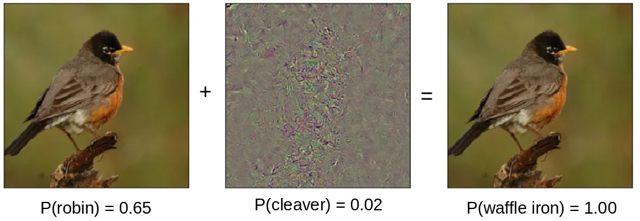

| Layer Freezing as a Technique to Improve Adversarial Robustness and Accuracy | |||
| Anakha Ganesh | |||
| Final project for 6.7960, MIT | |||
Methodology
The hypothesis proposed in this experiment is that layer freezing will improve both the accuracy and adversarial robustness of the model. Specifically, it is hypothesized that the model with the initial half of its layers frozen will perform better than the finetuned model, which will perform better than the control model since the half frozen model has more layers to preserve its latent features and more layers to improve performance on adversarial inputs.

Figure 1: Resnet18 model architecture [12]
The dataset used was CIFAR-10, containing 60,000 32 x 32 color images classified into 10 different classes [13]. The base model used to identify the images was Resnet18, which utilizes a shallow architecture with skip connections and propagation of residuals to perform better identification of images [14]. Resnet18 was chosen due to its quick training time and high accuracy. A fully connected layer was added to Resnet18 to map the output channels to the size of CIFAR-10 output channels (10), and the images were converted to tensors. The Resnet18 model was initialized with its pretrained values and trained for 20 epochs in a standard fashion without any adversarial training. From here, the Resnet18 model trained on CIFAR-10 data will be referred to as the base model. This base model formed the basis for the three experiments conducted.
\[
\arg\min_\theta \mathbb{E}_{(x,y)\sim\mathcal{D}}\left\{\max_{\delta\in\mathcal{S}}L(\theta,x+\delta,y)\right\}
\]
Equation 1: Adversarial Training Objective [15]
The next stage involved adversarial training. Three variations of the base model were constructed with different variants of layer freezing, all of which utilized the following adversarial training scheme. The projected gradient descent (PGD) attack was chosen since it traditionally generates strong adversarial examples and is canonically used when other parameters about an adversarial attack aren't specified [16]. This method makes small changes to input data to take advantage of a model's gradient calculation to force a mistake. This training scheme was adapted from a publicly available adversarial training implementation on CIFAR-10 [17]. This method contains modifications to the actual adversary generation, where the advertorch package was used instead of custom generation of PGD attacks.
Figure 2: Experiment Setup
Three experiments were conducted. The first experiment was a control experiment, where none of the layers were frozen. The second experiment involved layer freezing half of the layers in the base model. This was informed by prior work where half of the layers were frozen to observe layer freezing and adversarial robustness. The third experiment followed the heuristics for finetuning. All layers were frozen except for the last, fully connected layer, which was trained adversarially. Hyperparameters were determined by manual exploration and time constraints. Each model was trained with cross entropy loss, and a stochastic gradient descent optimizer. These experiments were trained for 25 epochs due to time constraints, with a learning rate of 0.01.

Figure 3: PGD Perturbation [18]